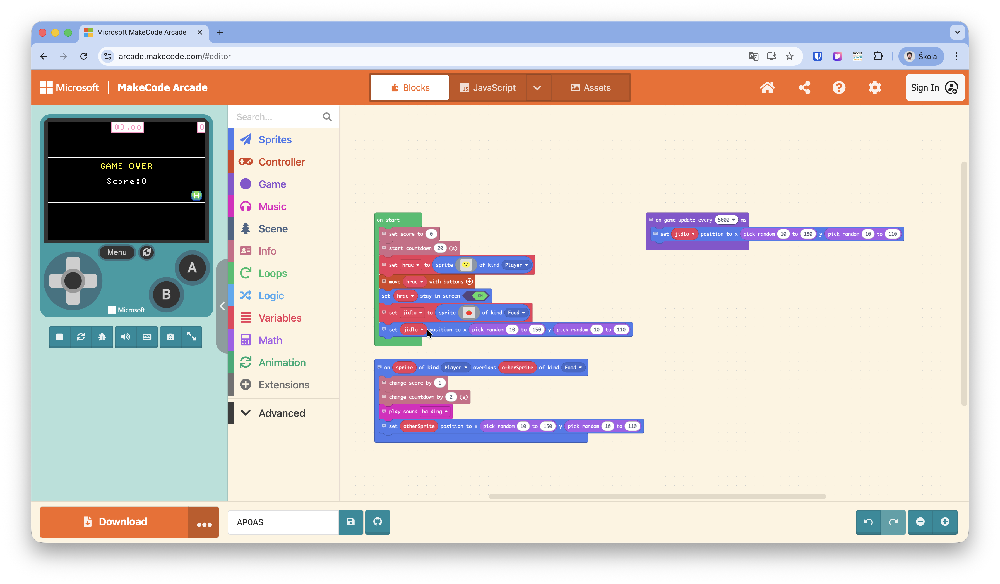

Tvorba interaktivní hry v MakeCode Arcade

Společná diskuze: "Kde přesně jsme v kódu použili podmínku IF?" (Skrytá v bloku pro překryv). "Co by se stalo, kdybychom neměli proměnnou pro čas?"
Žáci mohou pracovat v blocích. Tento JS kód lze vložit do editoru (přepínač nahoře) a automaticky se přeloží do plně funkčních vizuálních bloků.
let jidlo: Sprite = null
let hrac: Sprite = null
// 1. Proměnné a start
info.setScore(0)
info.startCountdown(20)
hrac = sprites.create(img`
. . . 5 5 5 5 5 . . .
. 5 5 f 5 5 5 f 5 5 .
. 5 5 5 5 f 5 5 5 5 .
. . . 5 5 5 5 5 . . .
`, SpriteKind.Player)
controller.moveSprite(hrac)
hrac.setStayInScreen(true)
jidlo = sprites.create(img`
. . 2 2 2 2 2 2 . .
. . 2 2 2 2 2 2 . .
`, SpriteKind.Food)
jidlo.setPosition(randint(10, 150), randint(10, 110))
// 2. Cyklus (Odskok jídla)
game.onUpdateInterval(3000, function () {
jidlo.setPosition(randint(10, 150), randint(10, 110))
})
// 3. Podmínka (Kolize)
sprites.onOverlap(SpriteKind.Player, SpriteKind.Food,
function (sprite: Sprite, otherSprite: Sprite) {
info.changeScoreBy(1)
info.changeCountdownBy(2)
music.baDing.play()
otherSprite.setPosition(randint(10, 150), randint(10, 110))
})randint(10, 150) generuje náhodné souřadnice, aby jídlo neskákalo mimo obrazovku.Tvůj úkol: Naprogramuj hru, kde tvá postavička sbírá jídlo dřív, než vyprší čas!
Player) a nastav jí ovládání šipkami. Nezapomeň zapnout, aby neutíkala z obrazovky (stay in screen).Food) a libovolně si ho nakresli.pick random / randint pro souřadnice X i Y).Přidej do hry novou postavu – nepřítele (typ Enemy). Naprogramuj druhou událost kolize tak, aby po dotyku s nepřítelem hráč ztratil body, ubral se mu čas, nebo přišel o život!